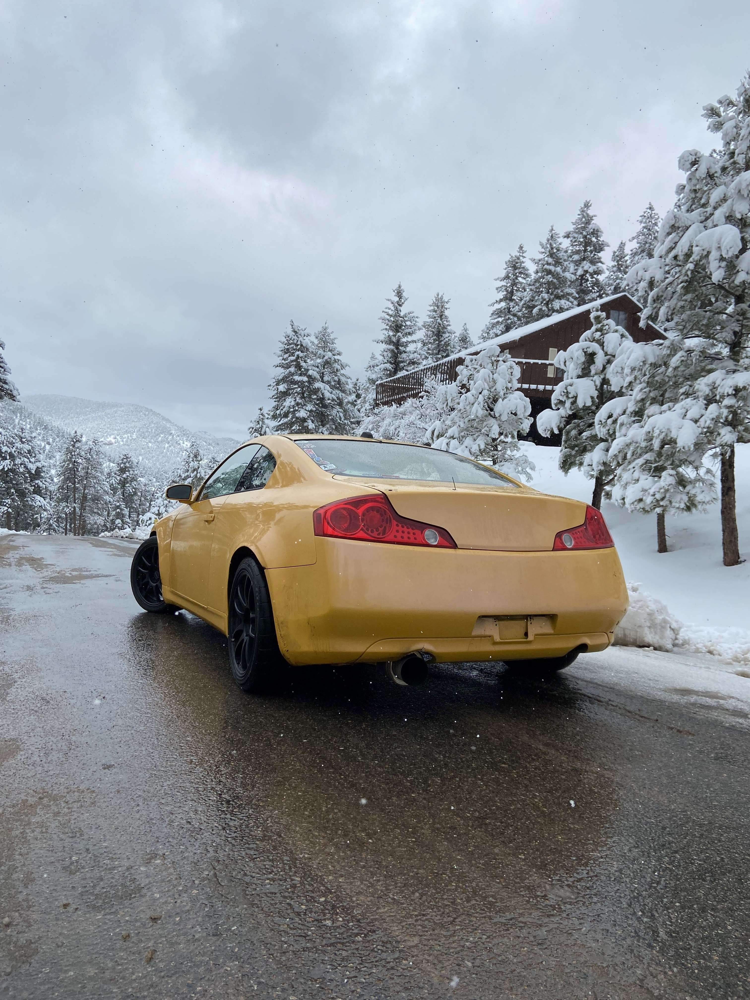

I was born in Paris, France, and moved to the United States at the age of two. After three years, I returned to Paris, then came back to the US for another three years. From there, I moved to London, but after just one year, I relocated to Boulder, Colorado, where I've been ever since. Living across different cultures and regions has given me a unique perspective on how people adapt and change around the world.
During my time in Boulder, I had the opportunity to work at several restaurants, but one in particular had a profound impact on my professional development. I served as a Garm Chef at Pizzeria Locale, now known as Pizzeria Alberico. This experience was transformative, as it allowed me to work alongside chefs from Frasca Food and Wine, Pizzeria Alberico’s sister restaurant. Their mentorship reshaped my approach to food, refined my perspective on attention to detail, and enhanced my ability to collaborate with colleagues. Frasca Food and Wine, now the only Michelin Star restaurant in Boulder, provided a unique environment where I learned firsthand that dedication and hard work can lead to exceptional achievements.
I have a strong passion for cars and precision driving. Currently, I am collaborating with a mechanic in Loveland to perform an LS engine swap in my track car, which has been extensively modified for drifting competitions. I have dedicated countless hours to honing my driving skills at the track, with the goal of competing during the summer season. This year, I am hopeful to secure a sponsor, allowing me to focus more on my driving and less on the constant maintenance and repairs of my car.
